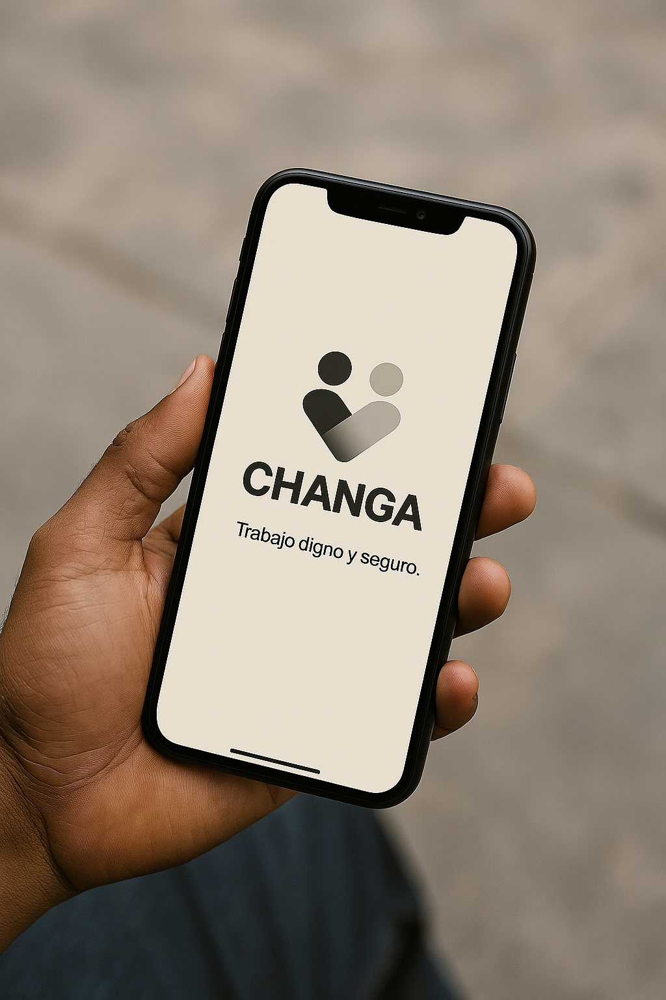

Piloto inicial · Uruguay
Trabajo inmediato, cerca tuyo.
Publicá una changa o encontrá trabajo real en tu zona. Changa conecta personas, clientes y empresas para resolver tareas, suplencias y oportunidades puntuales con más orden, reputación y confianza.
Publicá en minutosPersonas disponiblesReputación visibleUrgencias y oficios

Changa publicadaJardinería · Valdense · Hoy
3 disponibles cercaPerfiles con zona y reputación inicial.
Coordinación claraCondiciones acordadas antes de avanzar.
Cómo funciona
Un flujo simple para que la necesidad encuentre acción.
Elegí un rol y mirá cómo Changa ordena publicación, postulación, coordinación y reputación.
Cliente
Mapa operativo
Trabajo moviéndose cerca tuyo.
Explorá changas simuladas, filtrá por rubro o urgencia y abrí cada oportunidad para ver el flujo dentro de Changa.
⌕
Zona demo · ColoniaSeleccioná una changa
Ejemplo visual con datos simulados para mostrar cómo funcionará Changa durante el piloto.
Para quién es
Tres entradas. Un mismo sistema.
Para quien necesita trabajar, resolver o cubrir una urgencia operativa.
Para changadores
Oportunidades cerca tuyo, con más visibilidad y reputación desde el primer trabajo.
- Mostrá oficio, zona y disponibilidad.
- Postulate a tareas puntuales.
- Construí historial real.
Para clientes
Publicá una necesidad, compará perfiles y coordiná con más información.
- Ideal para urgencias y oficios.
- Publicación simple y rápida.
- Menos improvisación, más orden.
Para empresas
Suplencias, zafras, refuerzos y apoyo operativo cuando el equipo no alcanza.
- Cubrí faltas y picos.
- Guardá buenos perfiles.
- Campo, construcción, eventos y logística.

Vida real
Detrás de cada changa hay una persona, una necesidad y una oportunidad.
La web mantiene espacios listos para sumar fotos reales del piloto sin caer en stock falso ni imágenes que parezcan IA.
Ver mapa demoHerramientas / manosEspacio para foto real
Jardinería / campoEspacio para foto real
Confianza
Confianza desde el primer contacto.
Changa no reemplaza el criterio humano: lo ordena.
Pagos
Simple al principio. Escalable después.
En la fase inicial, el pago del trabajo se coordina directamente entre cliente y changador.
Pagos simples en la etapa inicial.
Changa funciona como plataforma de conexión, gestión y reputación. La plataforma podrá cobrar un fee de gestión separado por publicar, activar o coordinar una changa.
No somos una billetera, no retenemos el pago del trabajador y no redistribuimos fondos del trabajo en esta etapa.
Piloto
Entrar temprano importa.
Los primeros usuarios van a construir la reputación inicial de Changa. En el piloto, cada perfil, cada changa y cada calificación ayudan a ordenar cómo se mueve el trabajo real en Uruguay.
Sumarme al pilotoRegistro piloto
Sumate a la nueva forma de mover trabajo real.
Dejá tus datos para entrar a la etapa inicial. Te contactaremos cuando Changa active tu zona o cuando haya oportunidades compatibles.
FAQ
Preguntas claras antes de empezar.
¿Qué es Changa?
Una plataforma para publicar, encontrar y coordinar changas, suplencias y tareas puntuales.
¿Dónde estará disponible?
La etapa inicial se enfocará en zonas piloto de Uruguay, con expansión progresiva.
¿Cómo se paga?
En la fase inicial, el pago del trabajo se coordina directamente entre cliente y changador.
¿Changa emplea a los changadores?
No. Changa opera como plataforma de conexión, gestión y reputación.